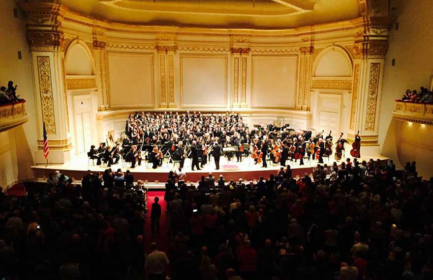
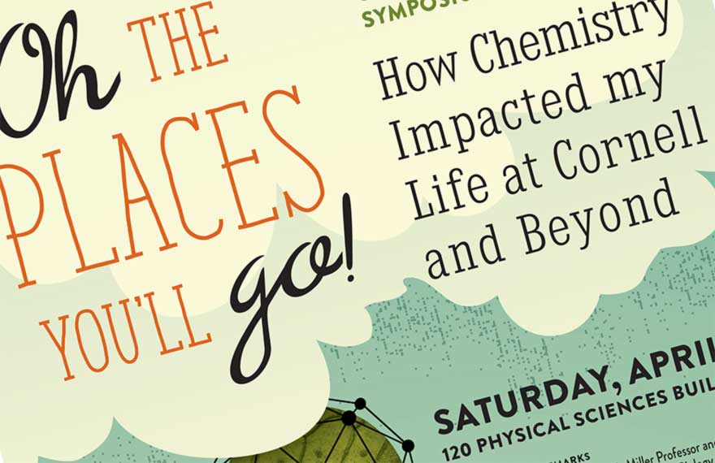
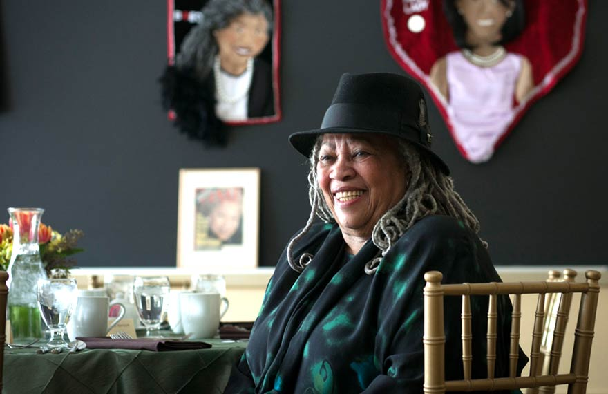
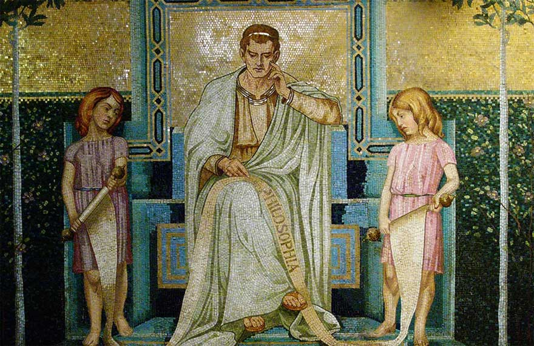
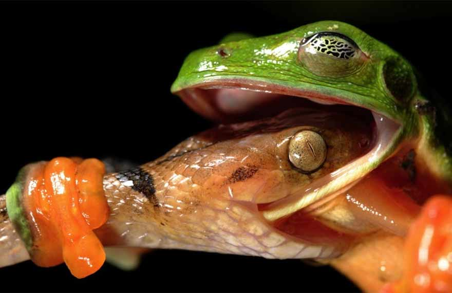
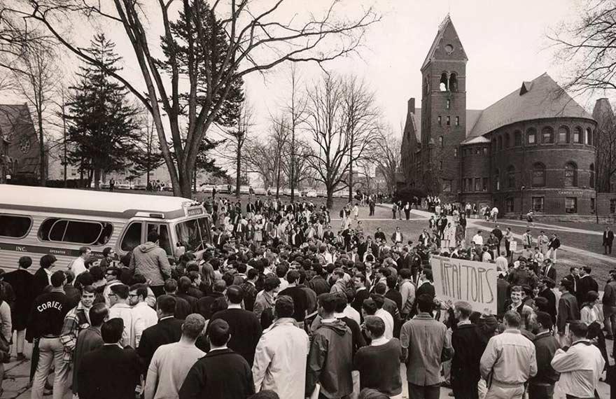
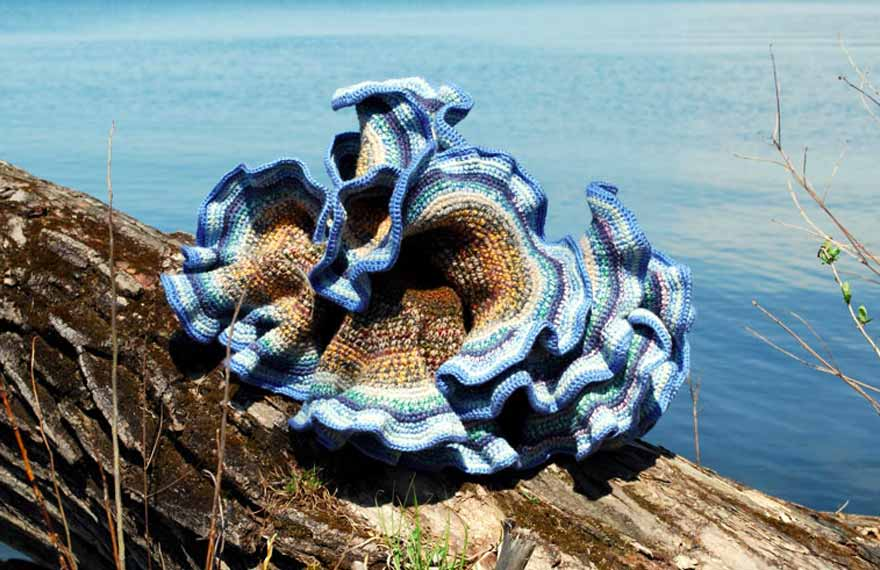
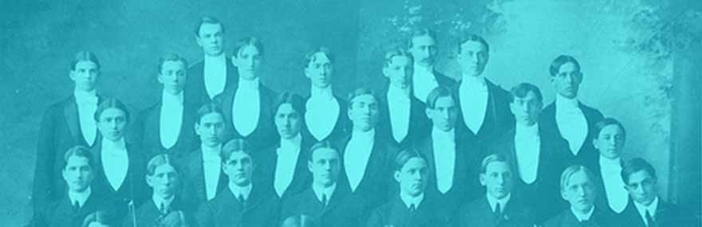

As Cornell celebrates 150 years, the College of Arts and Sciences explores the ideas, imaginations and discoveries that have made it a bustling and collaborative intersection for the arts, sciences, humanities, and social sciences at the center of this great university.
College of Arts and Sciences
A&S luminaries shine at Charter Day events
Cornell's 150th birthday extravaganza featured performances, lectures and "eye-popping" images from faculty, alumni and students from the College of Arts & Sciences.
Full story on Arts &Sciences Activities
Musical tributes to #Cornell150
Cornell's Glee Club and Chorus were a hit at Carnegie Hall, and an integral part of Charter Day Weekend activities.
Full story on Arts&Sciences Activities1971 Science Magazine recognizes the work of sociology Prof. Louis Guttman on the development of scaling theory as one of the 62 major advances in social science between 1900 and 1965.
More Milestones1954Ruth Bader Ginsburg '54 receives her bachelor's degree in government. She will go on to become the second female Supreme Court Justice of the United States in 1993.
More Milestones
Chemistry alumni celebrate varied career pathways
From medicine to art preservation to explosives detection, chemists tell their stories at sesqui event.
The varying paths of chemists
History, Meaning & Language in the Novels of Toni Morrison
In honor of Cornell's Sesquicentennial, the English department recognized Nobel Prize winner Toni Morrison, M.A. '55, as the subject of the annual Wendy Rosenthal Gellman Lecture on Modern Literature.
Full story on Gellman lecture
Thinking the Deepest Thoughts
Some of the greatest minds in philosophy have studied and taught in the Sage School of Philosophy since its founding in 1891.
Full history of the Sage School.1973Physics Professor Edwin Salpeter receives the Gold Medal from the Royal Astronomical Society.
More Milestones1969The Cornell Conference on Women takes place over a four-day period during winter intersession, leading to the first women's studies courses.
More MilestonesCornellians to Anatolia
Blizzards, bad roads and "unsettled" country: nothing daunted three Cornellians on an archaeological expedition to Anatolia in 1908. But their courageous story has been lost to Cornell history — until now.
Experience the Journey
Uncovering Mysteries and Solving World Problems
Former students of the Department of Ecology and Evolutionary Biology who now work for organizations ranging from NOAA to the Nature Conservancy to universities and the New York Times are coming to campus to tell their stories.
Get the Full Schedule.
The Vietnam War on Campus, Revisited
In the mid-1960s, Cornell students were caught up in the cataclysmic movements and events surrounding the growing resistance to the Vietnam War.
See how the events unfolded.Dancing in the Streets and 149 More Stellar Events
Surprising venues and inventive performances are behind the 150 events created to celebrate Cornell's colorful history.
Get the Full Schedule.1966The Society for the Humanities is founded.
More Milestones1973Professor A. R. Ammons of the English Department wins the National Book Award for "Collected Poems"
More Milestones
Percolation, Activism and Hyperbolic Crocheting
Known throughout the world for its stimulating atmosphere, the Department of Math covers a broad spectrum of research. Learn about the department's rich history, pioneering research and distinguished faculty.
See How It All Adds Up.
1868The Cornell University Glee Club is founded within a month of the opening of Cornell.
More Milestones1946Biochemistry Professor James Sumner wins the Nobel Prize for his pioneering work purifying and crystallizing enzymes.
More Milestones